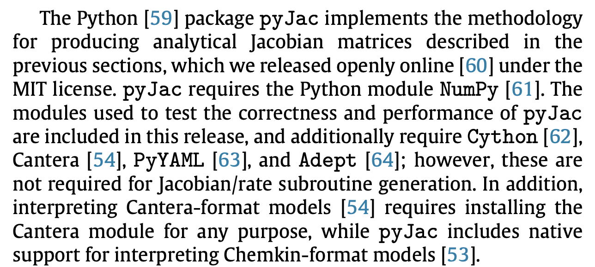
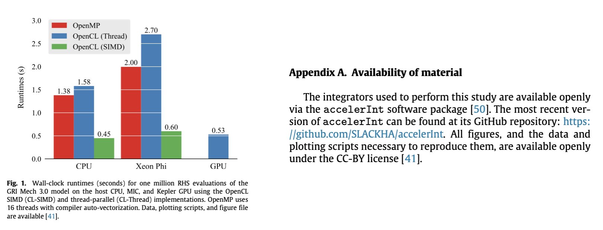
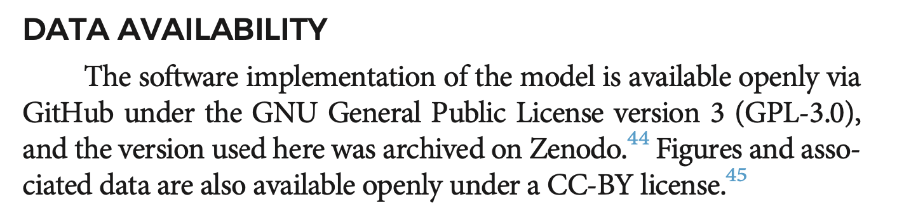
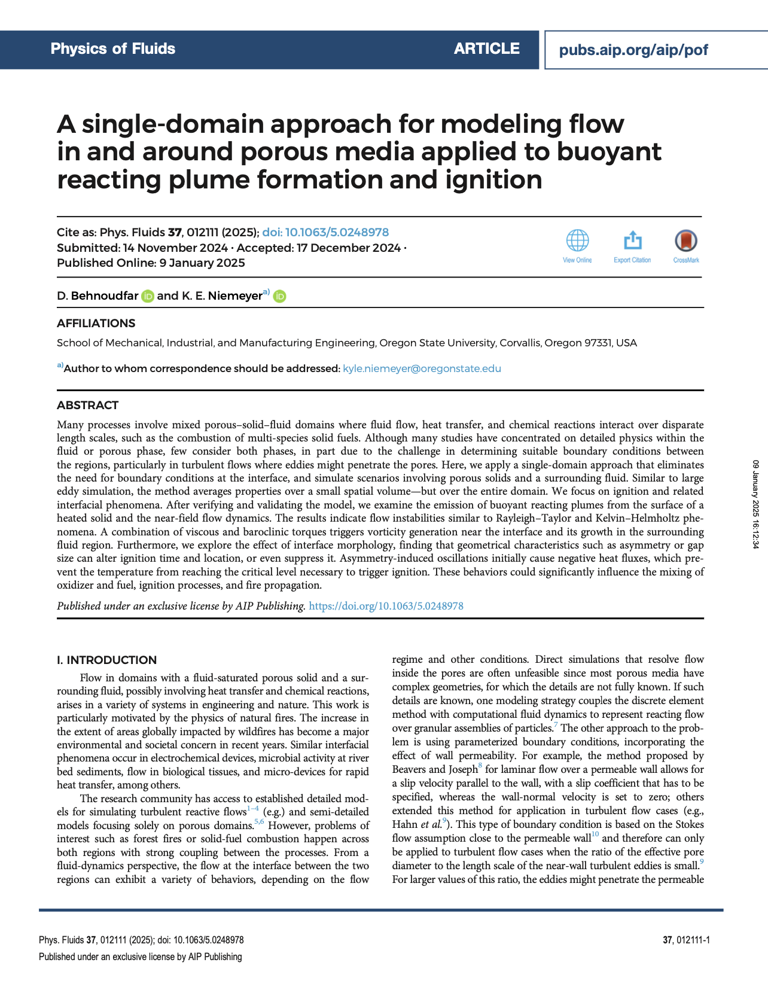

Open science, software citation, reproducibility best practices
2025-03-05
Great! All done?

For research, we need one more step: archival of software and/or data.
Consider: what if you cite this, then someone modifies or deletes it?
Archiving

Live demo: connect GitHub to Zenodo

Software citation principles

Smith AM, Katz DS, Niemeyer KE, FORCE11 Software Citation Working Group. (2016) Software citation principles. PeerJ Computer Science 2:e86 https://doi.org/10.7717/peerj-cs.86

Where to cite?
In the text with the references/bibliography.

KE Niemeyer, “PyTeCK: a Python-based automatic testing package for chemical kinetic models”. Proceedings of SciPy 2016. https://doi.org/10.25080/Majora-629e541a-00c

KE Niemeyer, NJ Curtis, & CJ Sung. “pyJac: analytical Jacobian generator for chemical kinetics” (2017) Computer Physics Communications, 215:188–203. https://doi.org/10.1016/j.cpc.2017.02.004
Journal of Open Source Software (JOSS)
- https://joss.theoj.org
- Developer-friendly journal for research software packages
- Affiliate of Open Source Initiative
- Open access, no fees: diamond/platinum open access journal

“If you’ve already licensed your code and have good documentation then we expect that it should take less than an hour to prepare and submit your paper to JOSS.”
JOSS paper submission

JOSS paper reviews

JOSS review

How to cite/mention


CP Stone, AT Alferman, & KE Niemeyer. 2018. “Accelerating finite-rate chemical kinetics with coprocessors: comparing vectorization methods on GPUs, MICs, and CPUs.” Computer Physics Communications, 226:18–29. https://doi.org/10.1016/j.cpc.2018.01.015


D Behnoudfar & KE Niemeyer. 2025. “A single-domain approach for modeling flow in and around porous media applied to buoyant reacting plume formation and ignition.” Physics of Fluids, 37:012111. https://doi.org/10.1063/5.0248978

Open-access journals

Open Access (OA)
Meaning: research output that is free to access/read
Types of open access

Green OA
self archiving
Gold OA
open access journal
Green OA
Meaning: publish in traditional (closed) venue, but also make available openly.
Where? eprint/preprint archives.


 Journal version

Author-accepted version